For 1.1, I implemented 2D convolution from scratch in NumPy, first using four loops and then optimizing it with two loops with padding. I validated it by comparing its output with scipy.signal.convolve2d, then applied it to a grayscale photo using a 9×9 box filter and then the finite difference operators dx and dy.
Convolution with four for loops code:
def convolve_4_loops(image, kernel):
kh, kw = kernel.shape
pad_h = kh // 2
pad_w = kw // 2
padded = np.pad(image, ((pad_h, pad_h), (pad_w, pad_w)))
output = np.zeros_like(image)
for i in range(image.shape[0]):
for j in range(image.shape[1]):
for m in range(kh):
for n in range(kw):
output[i, j] += padded[i + m, j + n] * kernel[m, n]
return output
Convolution with two for loops code:
def convolve_2_loops(image, kernel):
kh, kw = kernel.shape
pad_h = kh // 2
pad_w = kw // 2
padded = np.pad(image, ((pad_h, pad_h), (pad_w, pad_w)))
output = np.zeros_like(image)
for i in range(image.shape[0]):
for j in range(image.shape[1]):
patch = padded[i:i+kh, j:j+kw]
output[i, j] = np.sum(patch * kernel)
return output
The two-loop version runs significantly faster than the four-loop one due to reduced nested functions and the use of np for kernel multiplication and summation. Both custom functions produced results identical to scipy.signal.convolve2d. However, convolve2d is still the fastest. For boundary handling, my functions used zero-padding np.pad(). Convolve2d also offers more flexible boundary options like "symm" or "wrap".
Custom function Image result:
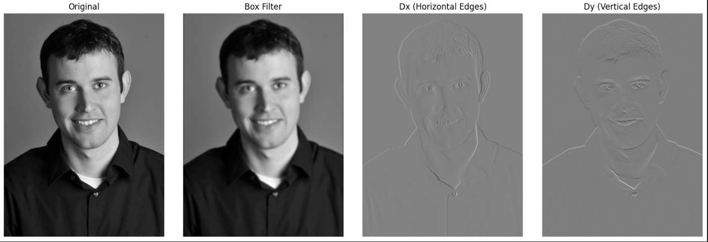
1.2: Finite Difference Operation
To detect edges, I applied the finite difference operators Dx and Dy to the “cameraman” image using scipy.signal.convolve2d. The horizontal and vertical gradients (Gx and Gy) were combined into a gradient magnitude map G via the Pythagorean theorem. After experimenting, T = 0.3 produced a clean binary edge map that suppresses noise showing all the real edges.
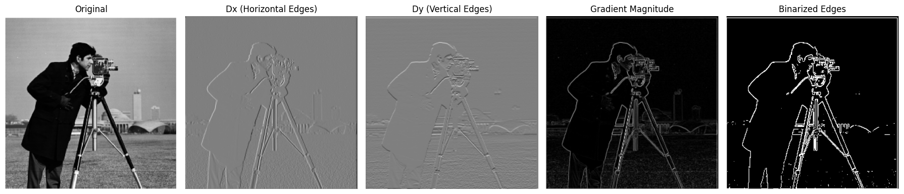
1.3: Derivative of Gaussian (DoG) Filters
Next, I explored smoothing with a Gaussian filter. I generated a 2D Gaussian kernel using cv2.getGaussianKernel() and applied it to the image before computing derivatives. The resulting edges were thicker and cleaner than with the raw finite difference method because the Gaussian filter suppresses high-frequency noise.
I then combined smoothing and differentiation into a single convolution by constructing Derivative-of-Gaussian (DoG) filters (Gx = G * Dx, Gy = G * Dy). Convolution with these DoG kernels produced the same results as the two-step process, showing the associative property of convolution: I * (G * Dx) = (I * G) * Dx. This approach results in the same clean, smoothed gradients but with more efficiency.
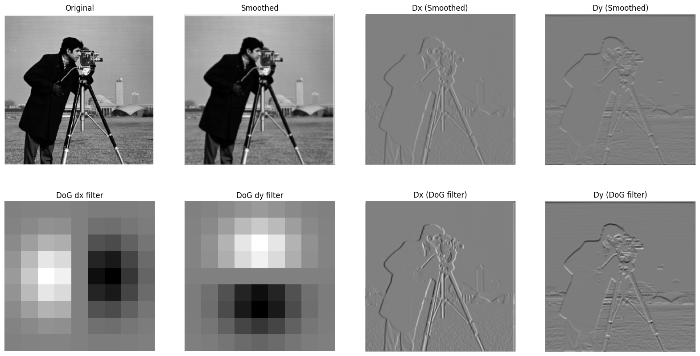
Part 2: Fun with Frequencies
2.1: Image "Sharpening"
Sharpening works by boosting the high-frequency components of an image, typically using the unsharp mask filter. I did this through:
Blur the original image to get low pass
Subtract the blurred image from the original to isolate high frequencies (HF)
Add high frequencies (alpha * HF) back to the original to get the sharpened image
I tested it on the Taj Mahal image with a Gaussian kernel. As the scaling factor alpha increased, the edges became more obvious, but it also produced unnatural rings around the high contrast areas. This shows that this sharpening process amplifies detail but cannot restore information lost from blurring.
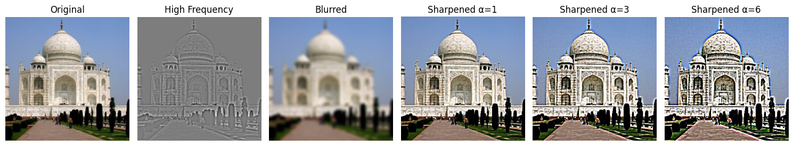
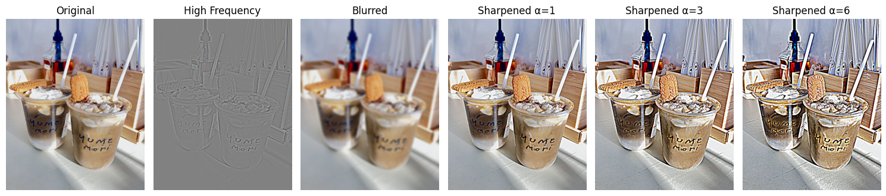
2.2: Hybrid Images
Hybrid images combine the low frequencies of one image with the high frequencies of another to create a composite that changes appearance based on viewing distance. I implemented this by:
I created the hybrid image by blending a low-pass filtered (LPF) image with a high-pass filtered (HPF) image. To implement this:
Extracting low frequencies from the first image using a Gaussian filter
Extracting high frequencies from the second image by subtracting its blurred version from the original
add the low and high filtered images to create the hybrid image
Nutmeg
Derek
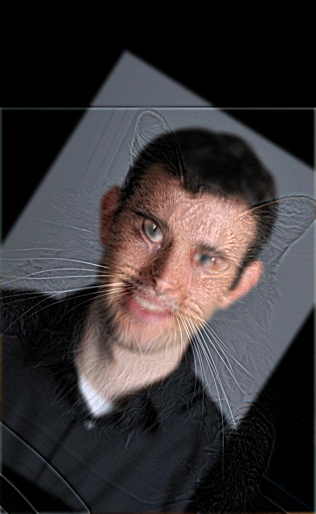
Hybrid
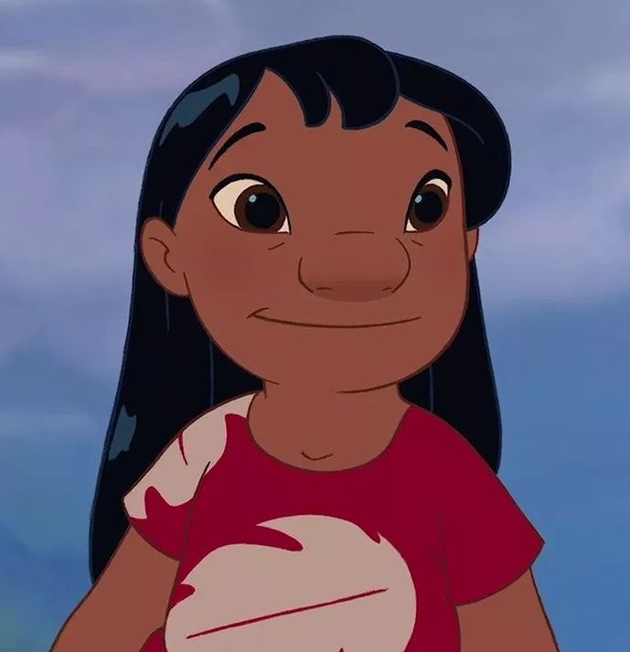
Lilo
Stitch
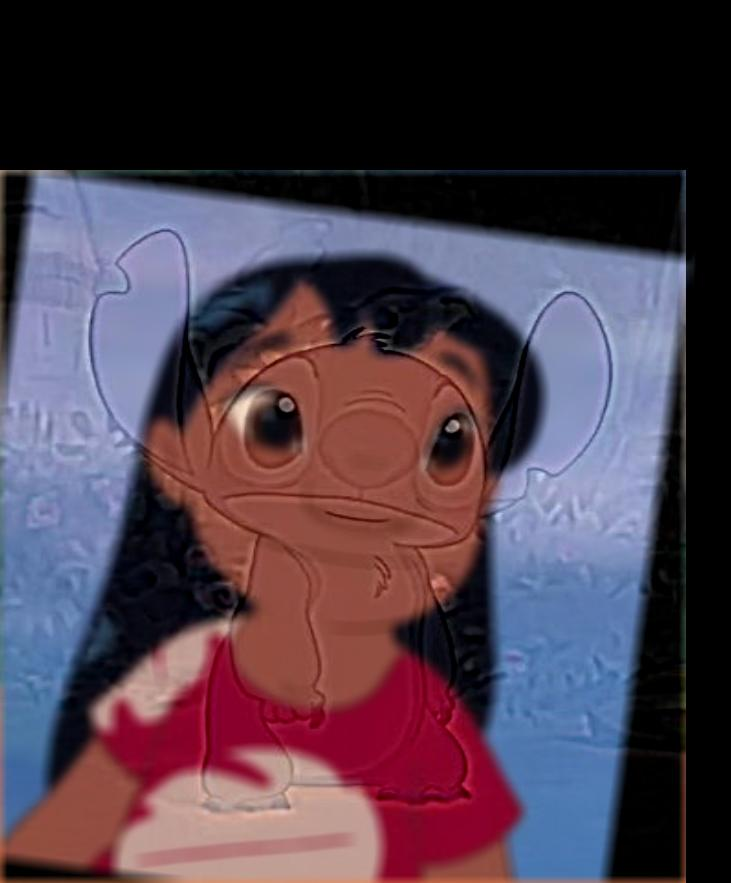
Hybrid
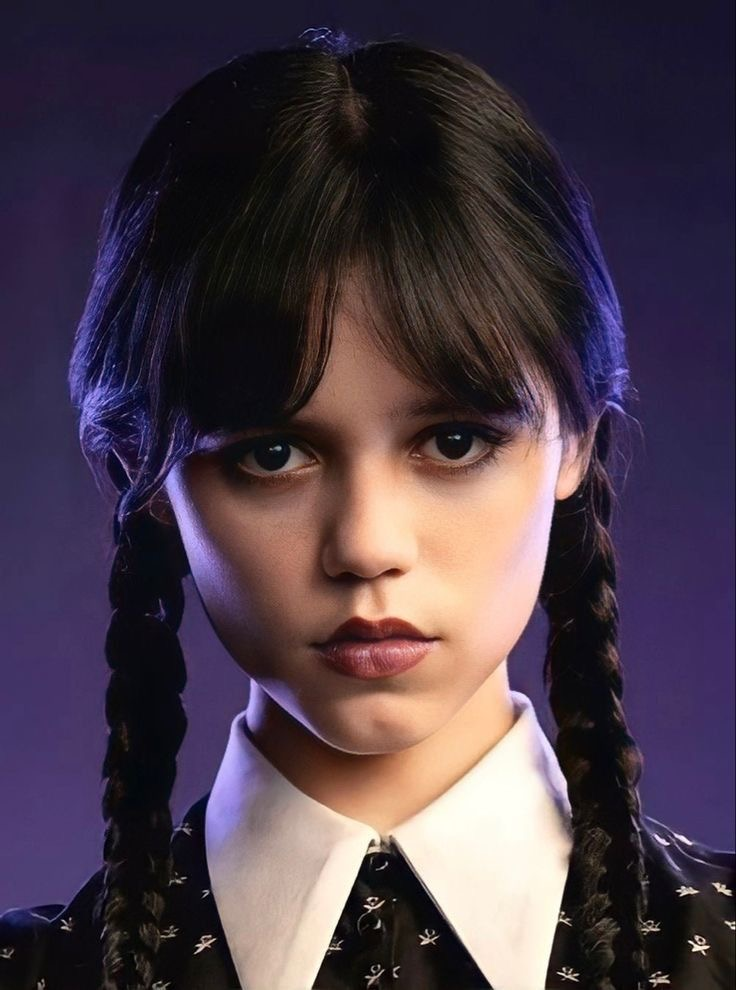
Wednesday
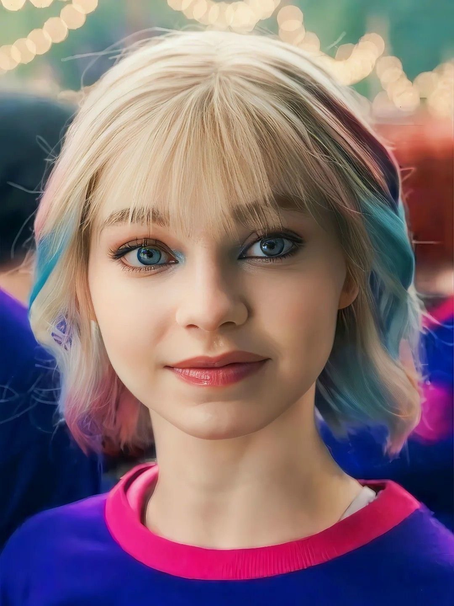
Enid
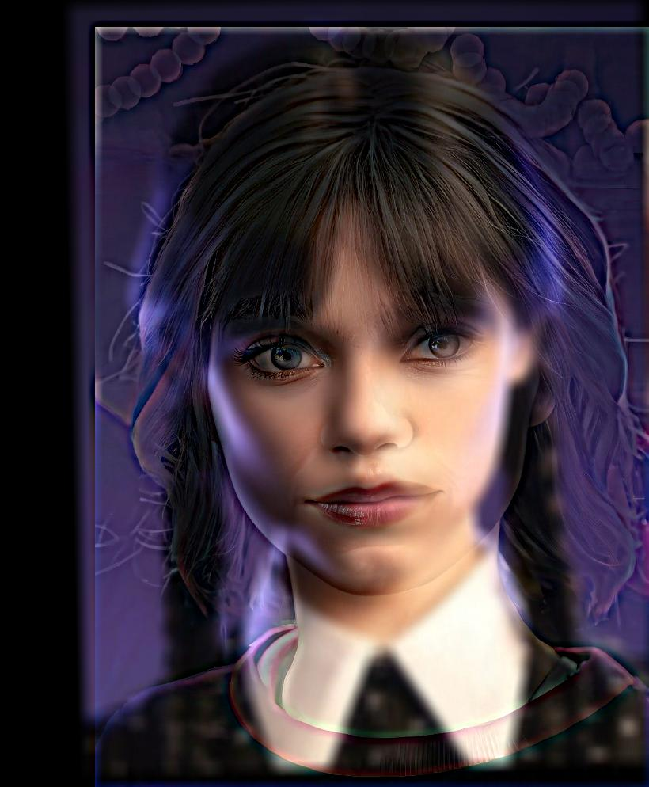
Hybrid
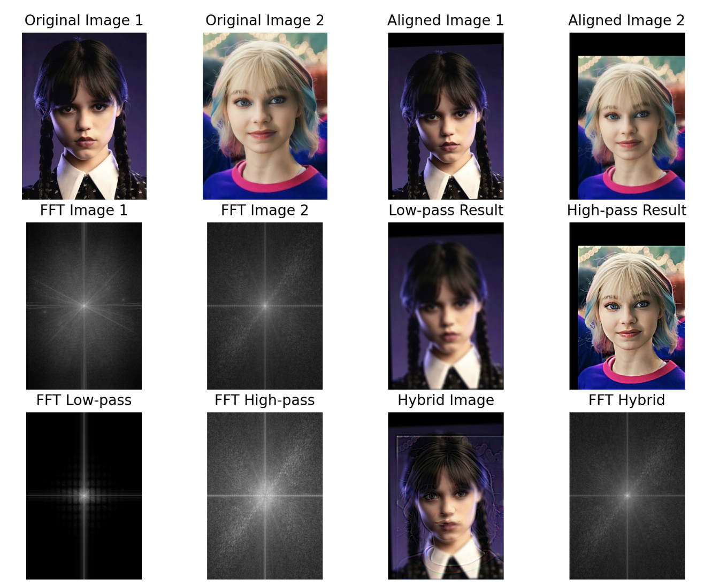
Fourier Transforms
The low-pass filtered image's FFT shows energy concentrated in the center (low frequencies), while the high-pass filtered image's FFT shows energy concentrated in the outer regions (high frequencies). The resulting hybrid FFT spectrum is a combination of these two.
2.3 + 2.4: Gaussian and Laplacian Stacks and Multiresolution Blending
Gaussian Stack: Each level of the stack is created by applying a Gaussian filter with increasing sigma values. This produces progressively smoother versions of the original image, capturing the image at different scales of detail.
Laplacian Stack: Each Laplacian layer represents the details lost between successive Gaussian layers. It is computed as: L_i = G_i - G_{i+1} This isolates the high-frequency content at each level.
Stacks are useful for blending because they allow us to separately manipulate low-frequency and high-frequency components without changing the image size. Initially, I used a vertical step mask with values 1 on the left and 0 on the right, but simply smoothing the mask with a Gaussian did not sufficiently eliminate the seam. Only a small region near the boundary changed, leaving a visible hard edge. After adjusting the mask to transition smoothly from 1 to 0 across a wider region, the blended images became seamless. I got this idea from an anonymous commenter on ed. I also tried blending with an irregular mask, specifically a circular mask. The Gaussian stack of the circular mask ensures the transition zone is smooth even along a curved edge.
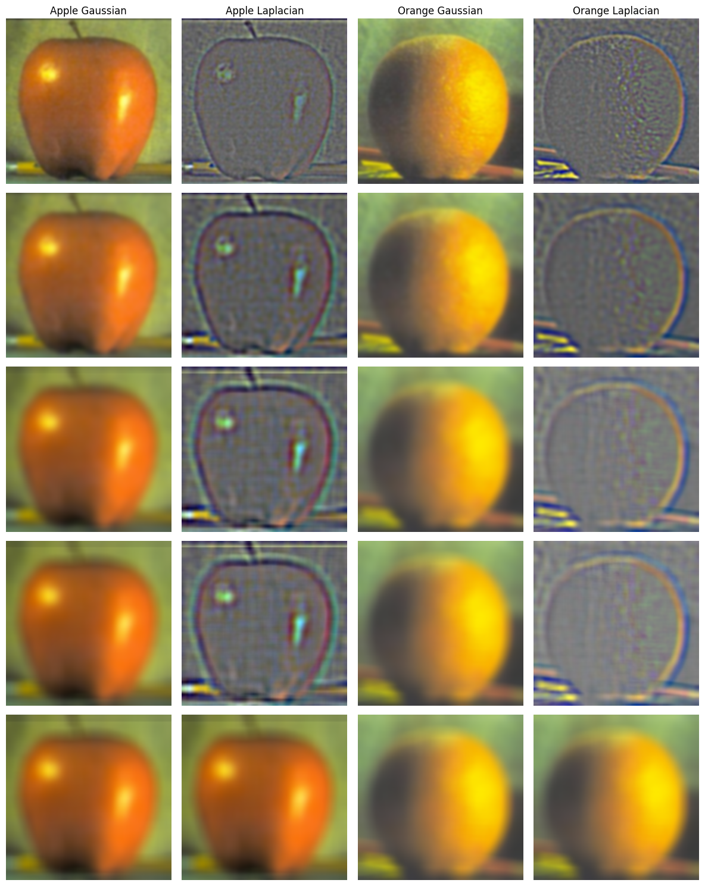
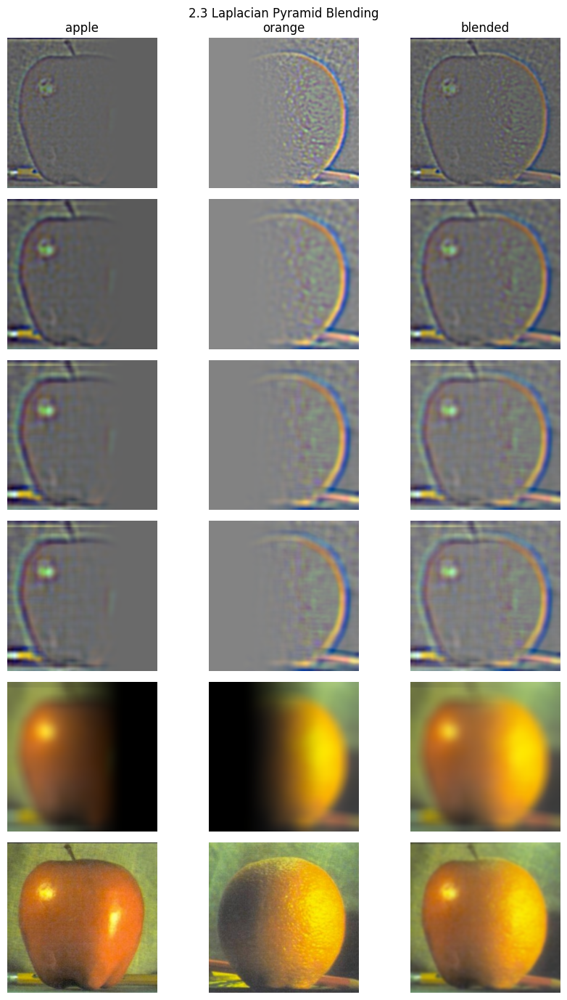
Additional Blended Images
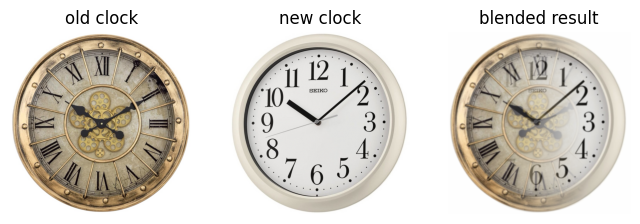
clock with vertical seam
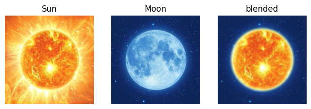
sun and moon with circle mask
Takeaway
One of the most interesting things I learned in this project was how manipulating different frequency components of an image can drastically change what we perceive. It was fascinating to see how high-frequency details show up when viewing an image up close, but at a distance, our eyes are drawn to the low-frequency components.